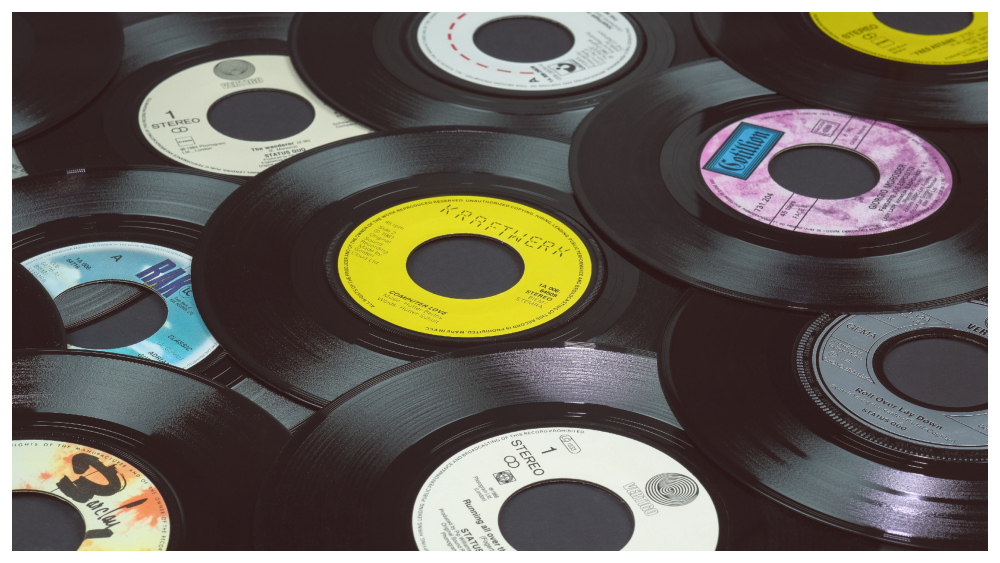

Robson Jorge -


 [
[ ](Por favor, proporciona un nombre de artista y álbum.)
](Por favor, proporciona un nombre de artista y álbum.)


Información del álbum facilitada por discogs.com:
Fecha de lanzamiento: 1982
Géneros: Electronic, Jazz, Latin, Funk / Soul
Estilos: Boogie, Funk, Fusion
Tracklist:
A1. Jorgeia Corisco (feat. Lincoln Olivetti & Robson Jorge) 3:45
A2. No Bom Sentido (feat. Lincoln Olivetti & Robson Jorge) 3:23
A3. Aleluia (feat. Lincoln Olivetti & Robson Jorge) 3:51
A4. Raton (feat. Hermes Contesini) 0:51
A5. Pret-À-Porter (feat. Lincoln Olivetti & Robson Jorge) 3:26
A6. Squash (feat. Lincoln Olivetti & Robson Jorge) 3:58
B1. Eva (feat. Lincoln Olivetti & Robson Jorge & Ronaldo Barcellos) 5:44
B2. Fá Sustenido (feat. Lincoln Olivetti & Robson Jorge) 3:03
B3. Zé Piolho (feat. Lincoln Olivetti & Robson Jorge) 0:44
. Baila Comigo / Festa Braba 3:30
B5. Ginga (feat. Lincoln Olivetti & Robson Jorge) 3:02
B6. Alegrias (feat. Lincoln Olivetti & Robson Jorge) 3:10